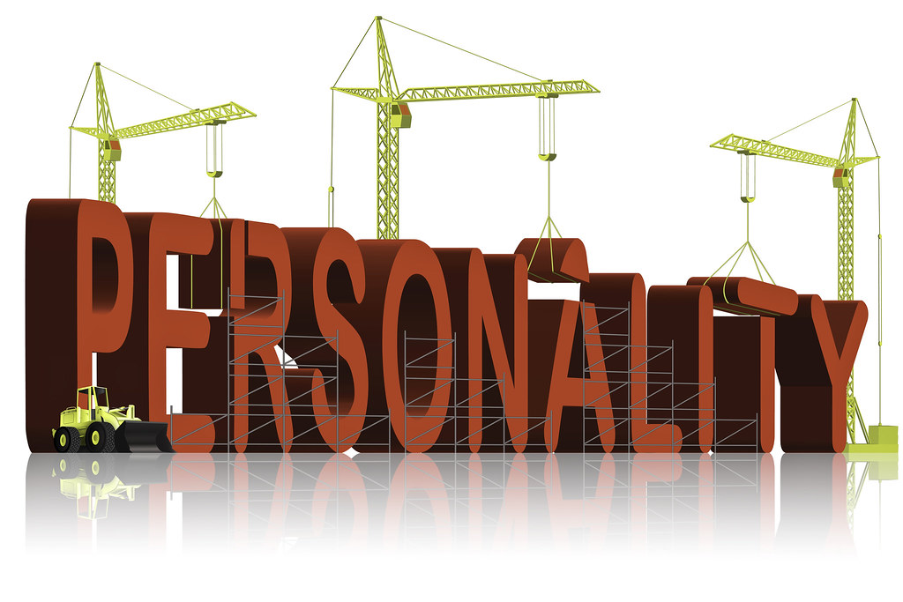

All About Noah
I enjoy many things in this world and I hate many things in this world. I am here to notify you of the things I like and how they have impacted my life becasue why not.
Things That Have Importance In My Life
Honesty - Honesty is a huge part of my life and had probably mad ethe hugest impact on my life. When I was little I used to lie a lot like a lot becasue I was scared of the consequneces if I would have told the truth but I learned as I got older you have much worse consequences if you lie rather than if you were to just come out and be honest.
Family - Family is one of the most important imapctful things in my life I have had so many close calls in my life and if I werent to have my family by my side I honestly dont think I would be here today thye have saved me from so mjany things and I couldnt say thank you enought to them.
Stres - The amount of stress I have had in m ylife is something I do not wish upon anybody. I have had to experience years and years of stress and stress really does mess with your head and makes you do and think things that are so unecessary and it has really changed how I view things now and I believe I am a much more relaxed person becasue of it.

"Hang_in_there", Personality, Flickr, CC BY 2.0
Link